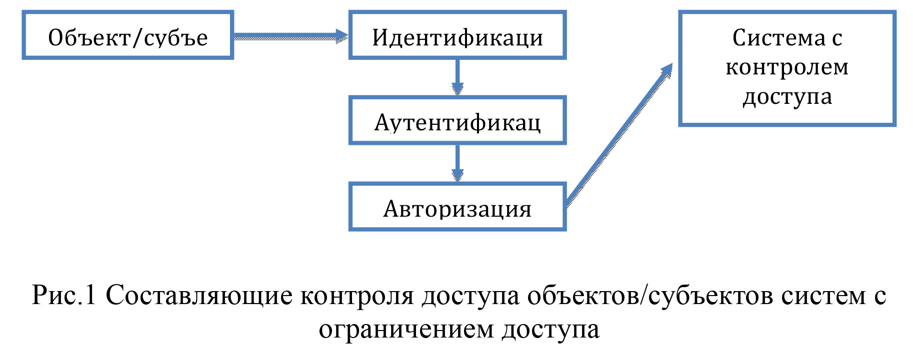
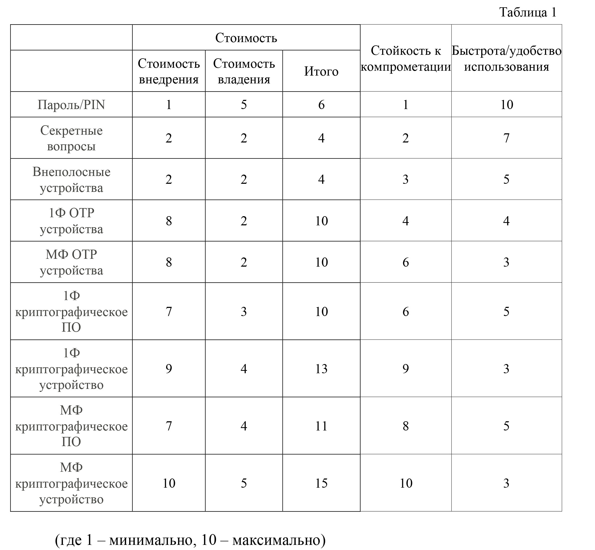

АНАЛИЗ СОВРЕМЕННЫХ СИСТЕМ АУТЕНТИФИКАЦИИ
Conference: АКТУАЛЬНІ ПИТАННЯ ЗАБЕЗПЕЧЕННЯ КІБЕРБЕЗПЕКИ ТА ЗАХИСТУ ІНФОРМАЦІЇ 2020 Європейській університет
Журов Ю.С.
магистрант кафедры безопасности информационных технологий,
Национальный авиационный университет
iurii.zhurov@gmail.com
Аннотация: Целью данного анализа является исследование современных
методов и инструментов цифровой аутентификации, их сильных и слабых
сторон, эффективности их использования. Также рассматривается современные
направления развития цифровой аутентификации.
Актуальность предмета анализа обусловленна развитием информационных
технологий. Их быстрое развитие привело к формализации контроля доступа
объектов/субъектов систем с ограничением доступа на следующие
составляющие:

Как мы видим на Рис.1 – ввиду последовательности процессов, аутентификация является связующим процессом, подтверждая идентификацию объектов/субъектов и давая разрешение на начало процесса авторизации. Таким образом, можно сделать вывод, что процесс аутентификации крайне важен для безопасности информационных технологий.
В процессе цифровой аутентификации выделяют цифровые аутентификаторы и методы аутентификации.Лаборатория информационных технологий при Национальном институте стандартов и технологий США (ITLattheNIST, USA) предлагает федеральным агентствам США, внедряющим цифровую аутентификацию, NIST Special Publication 800-63B, Digital Identity Guidelines, Authentication and Lifecycl eManagement. В данной публикации[1] выделены уровни аутентификации, аутентификаторы, а также ранжирование аутентификаторов по “гарантированию” (Authenticator Assurance Levels). Перечень аутентификаторы и подходов к внедрению цифровой аутентификации предлагаемые ITLNISTне является исключительным, однако как документ описывающий современное представление и использование цифровой аутентификации NIST.SP.800-63b вполне приемлем для целей данного анализа, такую же структуру предлагает і стандарт ISO/IEC 29115:2013[2].
Для анализа предлагаются следующие типы аутентификаторов: пароль/PIN, секретные вопросы, внеполосные устройства (OutOfBand, OOB), однофакторные OTP(OneTimePassword, одноразовый пароль) устройства (1Ф OTP устройства), многофакторные OTP устройства (МФ OTP устройства), однофакторное криптографическое ПО (1Ф криптографическое ПО), однофакторное криптографическое устройство (1Ф криптографическое устройство), многофакторное криптографическое ПО (МФ криптографическое ПО), многофакторное криптографическое устройство (МФ криптографическое устройство); и следующие виды факторов: знание (пароль, PIN, личные данные, последовательности), владение (устройство), свойство (биометрия).
В таблице 1 проанализированы аутентификаторы с ранжированием по критериям стоимости внедрения/владения системой цифровой аутентификации с каждым из видом аутентификаторов, стойкости к компрометации и быстроты/удобства использования.

Также хочется отметить, что критерий простоты/удобства использования субъектом цифровой аутентификации очень важен, так как это значительно влияет на человеческий фактор в работе информационной системы и его игнорирование способно нивелировать все предпринятые меры по улучшению информационной безопасности[3].
Основным инструментом цифровой аутентификации являются факторы, следует обратить внимание на возможности подверженности факторов зловредным действиям. Фактор знания: может быть подобран, угадан, подсмотрен, разглашен, получен незаконным путем. Фактор владения – может быть потерян, сломан, украден, скопирован. Фактор свойства – может быть подделан.
Далее следует обратить внимание на методы цифровой аутентификации: однофакторная, многофакторная, двухфакторная и многоканальная аутентификации. Многофакторная аутентификация является экспансивным развитием однофакторной аутентификации, двухфакторная аутентификация является поэтапным метолом аутентификации, многоканальная аутентификация не имеет достаточно глубоких исследований и реализация и в некоторых источниках ее приравнивают к многофакторной как носителя фактора владения.
На текущий момент можно выделить три направления развития цифровой аутентификации:
- Развитие стандартов и протоколов цифровой аутентификации (OAuth[4], OpenID[5], OpenIDConnect[5], WebAuth[6])и использование доверенных провайдеров аутентификации (Google, Microsoft, Facebook)[11].
- Двухфакторная аутентификация[7,10].
- Развитие аутентификаторов[8,13,14].
Из вышеизложенного можно сделать следующие выводы: ввиду отсутствия оптимального баланса стоимость/стойкость существует большой запрос на улучшение процесса аутентификации. Решением удовлетворения этого запроса может быть появление новых вариантов аутентификаторов, методов аутентификации, новых подходов к организации аутентификационного процесса. Уязвимости факторов аутентификации также вызывают необходимость в оптимизации процессов цифровой аутентификации. Также, особо хочется отметить, что во многих случаях субъектом цифровой аутентификации является человек, что привносит во весь процесс человеческий фактор, т.е. новым решениям желательно уменьшать риски человеческого фактора. Идеальным решением было бы наличие аутентификатора сочетающего все три фактора цифровой аутентификации, сосредоточенных в субъекте процесса, для взаимной компенсации недостатков.
Литература:
- NIST Special Publication 800-63B // National Institute of Standards and Technology. – 2017.
- Information technology — Security techniques — Entity authentication assurance framework: ISO/IEC 29115:2013 // International Organization for Standardization (ISO). – 2013.
- The current state of Authentication: We have a password problem / Article / Drew Thomas . – 2016.
- The OAuth 2.0 / Standard description / IETF. – 2012.
- OpenID Specification / Official site / OpenID Foundation. – 2014.
- WebAuth / W3C recommendations / W3C. – 2019.
- Two-factor authentication / Article / Bruce Shneider / Communications in ACM. - 2005.
- Методи біометрічної автентифікациїї користувачів інформаційних систем за їх клавіатурним та крукписним почерком: Автореферат/ Висоцька О.О. / Київ. - 2019.
- Аудит та управління інцидентами інформаційної безпеки: навч. посіб. / [Корченко О.Г., Гнатюк С.О., Казмірчук С.В. таін.]. – К.:Центрнавч.-наук. танаук.-пр. виданьНАСБУкраїни, 2014. – 190 с.
10 Authentication in web applications: master dissertation / Patrick Cervicek. – 2009 - Модель и методика многомодальной аутентификации пользователя автоматизированной системы: диссертация / Никитин В.В. – 2018
12.Asynchronous Challenge-Response Authentication Solution Based on Smart Card in Cloud Environment/ Conference paper / Guifen Zhao, Ying Li, Liping Du, Xin Zhao / IEEE. – 2015 - Multi-level authentication technique for accessing cloud services / Conference paper / H ADinesha, V K Agrawal / IEEE. – 2012
- The Adoption of Single Sign-On and Multifactor Authentication in Organisations: A Critical Evaluation Using TOE Framework / Article / Marise-Marie D'Costa-Alphonso. – 2010